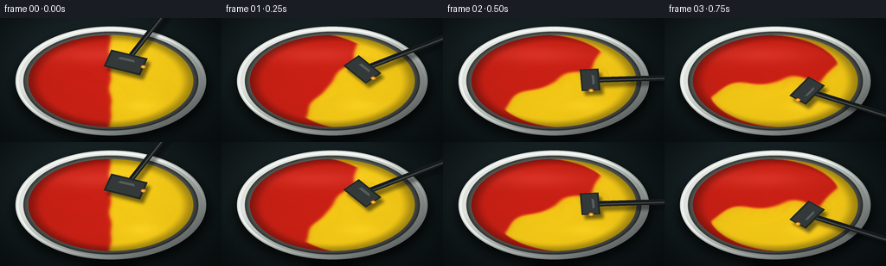
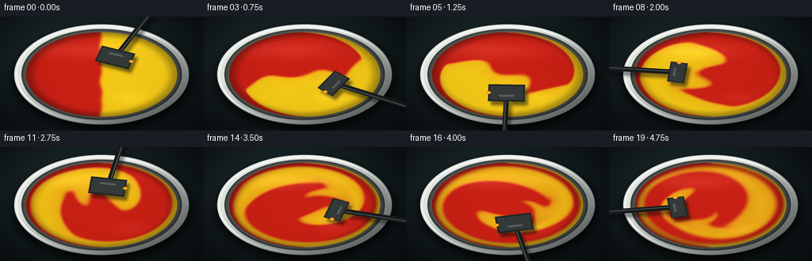
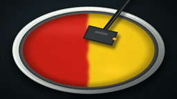
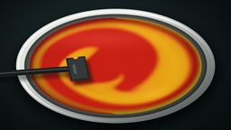
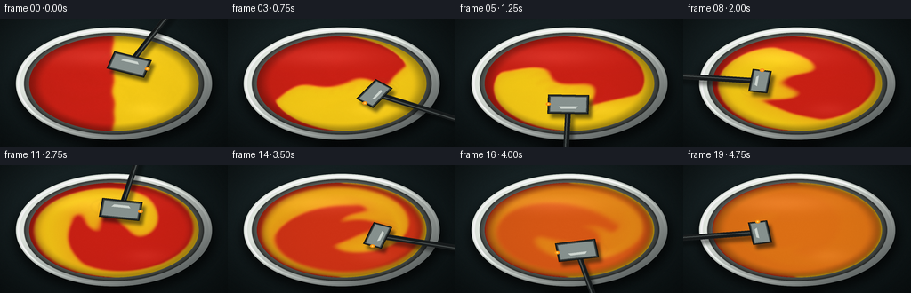
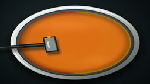
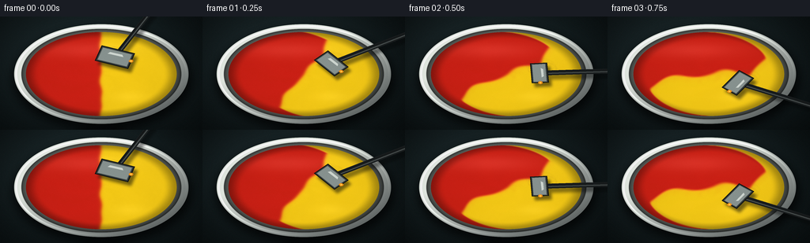

CODING AGENTS AS PIXEL WORLD MODELS
traex/DeepSeek-V4.1-Flash · phygen_122
点击播放 · 原生 RGB 像素
逐轮保存的候选
回放视频、检查图与代码变化。
每份候选均可单独播放。实际图片检查记录在下方工具轨迹中。
候选 01播放与检查图
点击播放 · 原生 RGB 像素

展开代码变化
--- 上一保存版本
+++ 本次保存版本
@@ -0,0 +1,432 @@
+from pathlib import Path
+
+import numpy as np
+from PIL import Image, ImageDraw, ImageFilter
+
+from artifact_io import save
+
+
+ROOT = Path(__file__).resolve().parent
+OUT_W, OUT_H = 256, 144
+SS = 4
+W, H = OUT_W * SS, OUT_H * SS
+FRAMES = 20
+FPS = 4.0
+
+# Scene geometry in the supersampled render.
+BOWL_CX, BOWL_CY = 512.0, 292.0
+BOWL_RX, BOWL_RY = 442.0, 254.0
+RIM_INNER_RX, RIM_INNER_RY = 404.0, 229.0
+PAINT_RX, PAINT_RY = 382.0, 214.0
+
+
+def smoothstep(x):
+ x = np.clip(x, 0.0, 1.0)
+ return x * x * (3.0 - 2.0 * x)
+
+
+def ellipse_mask(width, height, cx, cy, rx, ry, softness=1.0):
+ yy, xx = np.mgrid[0:height, 0:width]
+ d = np.sqrt(((xx - cx) / rx) ** 2 + ((yy - cy) / ry) ** 2)
+ return 1.0 - smoothstep((d - (1.0 - softness / max(rx, ry))) / (softness / max(rx, ry)))
+
+
+def make_table():
+ yy, xx = np.mgrid[0:H, 0:W]
+ nx = (xx - W * 0.5) / W
+ ny = (yy - H * 0.5) / H
+ vignette = np.clip(1.0 - 0.52 * (nx * nx * 1.8 + ny * ny * 1.2), 0.30, 1.0)
+ pool = 0.72 + 0.42 * np.exp(-((nx + 0.06) ** 2 / 0.24 + (ny + 0.13) ** 2 / 0.28))
+ base = np.empty((H, W, 3), dtype=np.float32)
+ base[..., 0] = 20.0
+ base[..., 1] = 31.0
+ base[..., 2] = 33.0
+ base *= (pool * vignette)[..., None]
+
+ rng = np.random.default_rng(90210)
+ coarse = rng.normal(0.0, 1.0, (H // 8, W // 8)).astype(np.float32)
+ coarse8 = np.clip(coarse * 34.0 + 128.0, 0, 255).astype(np.uint8)
+ coarse = np.asarray(Image.fromarray(coarse8, mode="L").resize((W, H), Image.Resampling.BICUBIC))
+ coarse = np.asarray(
+ Image.fromarray(coarse, mode="L").filter(ImageFilter.GaussianBlur(3.0)),
+ dtype=np.float32,
+ )
+ coarse = (coarse - 128.0) / 34.0
+ grain = 0.014 * coarse
+ grain += 0.008 * np.sin(xx * 0.022 + np.sin(yy * 0.013) * 2.1)
+ grain += 0.004 * np.sin(yy * 0.11 + xx * 0.006)
+ base += grain[..., None]
+
+ # Soft overhead light.
+ glow = np.exp(-(((xx - 330.0) / 520.0) ** 2 + ((yy - 150.0) / 360.0) ** 2))
+ base += (glow * 10.0)[..., None] * np.array([0.75, 0.95, 1.0], dtype=np.float32)
+ return np.clip(base, 0, 255)
+
+
+def add_soft_shadow(image):
+ layer = Image.new("RGBA", (W, H), (0, 0, 0, 0))
+ draw = ImageDraw.Draw(layer)
+ draw.ellipse(
+ (
+ BOWL_CX - BOWL_RX - 8,
+ BOWL_CY - BOWL_RY + 15,
+ BOWL_CX + BOWL_RX + 17,
+ BOWL_CY + BOWL_RY + 35,
+ ),
+ fill=(0, 0, 0, 176),
+ )
+ layer = layer.filter(ImageFilter.GaussianBlur(22))
+ image.alpha_composite(layer)
+
+
+def draw_bowl(image):
+ yy, xx = np.mgrid[0:H, 0:W]
+ dx = (xx - BOWL_CX) / BOWL_RX
+ dy = (yy - BOWL_CY) / BOWL_RY
+ d = np.sqrt(dx * dx + dy * dy)
+ outer = ellipse_mask(W, H, BOWL_CX, BOWL_CY, BOWL_RX, BOWL_RY, softness=1.6)
+ rim_inner = ellipse_mask(W, H, BOWL_CX, BOWL_CY, RIM_INNER_RX, RIM_INNER_RY, softness=1.4)
+ paint = ellipse_mask(W, H, BOWL_CX, BOWL_CY, PAINT_RX, PAINT_RY, softness=1.2)
+ rim = np.clip(outer - rim_inner, 0, 1)
+
+ # Ceramic rim, with a warm highlight on the upper left and cool bounce below.
+ light = np.clip(0.70 - 0.38 * dx - 0.42 * dy, 0.0, 1.0)
+ rim_rgb = np.empty((H, W, 3), dtype=np.float32)
+ rim_rgb[..., 0] = 116 + 96 * light
+ rim_rgb[..., 1] = 124 + 94 * light
+ rim_rgb[..., 2] = 123 + 88 * light
+ rim_rgb += (10 * np.clip(1.0 - np.abs(d - 0.93) / 0.09, 0, 1))[..., None]
+ rim_rgb *= np.clip(0.72 + 0.34 * light, 0.62, 1.18)[..., None]
+
+ outer_edge = ellipse_mask(W, H, BOWL_CX, BOWL_CY, BOWL_RX + 2.0, BOWL_RY + 2.0, 2.2)
+ outer_shadow = np.clip(outer_edge - outer, 0, 1)
+ rim_rgb *= (1.0 - 0.58 * outer_shadow)[..., None]
+
+ # Inner wall falls into shadow before the paint surface begins.
+ wall = np.clip(rim_inner - paint, 0, 1)
+ wall_t = np.clip((1.0 - np.sqrt(((xx - BOWL_CX) / RIM_INNER_RX) ** 2 +
+ ((yy - BOWL_CY) / RIM_INNER_RY) ** 2)) / 0.095, 0, 1)
+ wall_rgb = np.empty((H, W, 3), dtype=np.float32)
+ wall_rgb[..., 0] = 56 + 42 * wall_t
+ wall_rgb[..., 1] = 60 + 43 * wall_t
+ wall_rgb[..., 2] = 58 + 39 * wall_t
+ wall_rgb *= (0.72 + 0.30 * light)[..., None]
+ wall_rgb += (12 * wall_t)[..., None]
+
+ canvas = np.asarray(image, dtype=np.float32)
+ rgb = canvas[..., :3].copy()
+ for mask, color in ((rim, rim_rgb), (wall, wall_rgb)):
+ rgb = rgb * (1.0 - mask[..., None]) + color * mask[..., None]
+ canvas[..., :3] = np.clip(rgb, 0, 255)
+
+ # A crisp highlight and a dark inner contact line give the rim thickness.
+ rim_line = ellipse_mask(W, H, BOWL_CX, BOWL_CY, BOWL_RX - 6.0, BOWL_RY - 6.0, 2.2)
+ rim_line_in = ellipse_mask(W, H, BOWL_CX, BOWL_CY, BOWL_RX - 15.0, BOWL_RY - 15.0, 2.2)
+ highlight = np.clip(rim_line - rim_line_in, 0, 1) * np.clip(0.65 - dx * 0.55 - dy * 0.55, 0, 1)
+ canvas[..., :3] += (highlight * 58.0)[..., None]
+
+ contact = np.clip(
+ ellipse_mask(W, H, BOWL_CX, BOWL_CY, RIM_INNER_RX + 3, RIM_INNER_RY + 3, 2.4)
+ - ellipse_mask(W, H, BOWL_CX, BOWL_CY, RIM_INNER_RX - 2, RIM_INNER_RY - 2, 2.0),
+ 0,
+ 1,
+ )
+ canvas[..., :3] *= (1.0 - 0.34 * contact)[..., None]
+ image.paste(Image.fromarray(np.clip(canvas, 0, 255).astype(np.uint8), "RGBA"))
+ return paint, wall
+
+
+def bilinear_sample(field, x, y):
+ h, w = field.shape
+ x = np.clip(x, 0.0, w - 1.001)
+ y = np.clip(y, 0.0, h - 1.001)
+ x0 = np.floor(x).astype(np.int32)
+ y0 = np.floor(y).astype(np.int32)
+ x1 = np.minimum(x0 + 1, w - 1)
+ y1 = np.minimum(y0 + 1, h - 1)
+ tx = x - x0
+ ty = y - y0
+ a = field[y0, x0] * (1 - tx) + field[y0, x1] * tx
+ b = field[y1, x0] * (1 - tx) + field[y1, x1] * tx
+ return a * (1 - ty) + b * ty
+
+
+def blur_field(field, radius):
+ if radius <= 0:
+ return field
+ # Pillow's Gaussian blur is fast but float images are not supported on all
+ # Pillow builds, so use its 8-bit path for these bounded scalar fields.
+ encoded = np.clip(field * 255.0, 0, 255).astype(np.uint8)
+ im = Image.fromarray(encoded, mode="L")
+ im = im.filter(ImageFilter.GaussianBlur(radius))
+ return np.asarray(im, dtype=np.float32) / 255.0
+
+
+class PaintSimulation:
+ def __init__(self, width=384, height=216, seed=41):
+ self.w = width
+ self.h = height
+ yy, xx = np.mgrid[0:height, 0:width]
+ self.x = (xx + 0.5) / width * 2.0 - 1.0
+ self.y = (yy + 0.5) / height * 2.0 - 1.0
+ self.r = np.sqrt(self.x * self.x + self.y * self.y)
+ self.theta = np.arctan2(self.y, self.x)
+ self.mask = self.r <= 0.992
+ self.edge = np.clip((1.0 - self.r) / 0.13, 0.0, 1.0)
+
+ # A gently irregular, near-vertical split makes two equal paint charges.
+ interface = 0.010 * np.sin(7.2 * self.y + 0.6) + 0.007 * np.sin(15.0 * self.y - 1.1)
+ self.c = 1.0 / (1.0 + np.exp(-(self.x + interface) / 0.012))
+ self.c = np.clip(self.c, 0.0, 1.0)
+
+ rng = np.random.default_rng(seed)
+ noise = rng.normal(0, 1, (height // 3, width // 3)).astype(np.float32)
+ noise8 = np.clip(noise * 36.0 + 128.0, 0, 255).astype(np.uint8)
+ noise = np.asarray(Image.fromarray(noise8, mode="L").resize((width, height), Image.Resampling.BICUBIC))
+ noise = (noise.astype(np.float32) - 128.0) / 36.0
+ noise = blur_field(noise, 2.2)
+ self.texture = noise * 0.5 + np.sin(9.0 * self.r - 5.0 * self.theta) * 0.22
+ self.texture = np.clip(0.5 + 0.25 * self.texture, 0, 1)
+ self.t = 0.0
+
+ def velocity(self):
+ # Differential rotation plus a moving local vortex under the spatula.
+ swirl = 1.22 + 0.72 * np.exp(-((self.r - 0.43) / 0.29) ** 2)
+ swirl += 0.24 * np.sin(3.1 * self.r - 1.8 * self.t)
+ vx = -self.y * swirl
+ vy = self.x * swirl
+
+ stir_angle = -1.15 + 2.20 * self.t
+ sx, sy = 0.40 * np.cos(stir_angle), 0.40 * np.sin(stir_angle)
+ g = np.exp(-(((self.x - sx) ** 2 + (self.y - sy) ** 2) / 0.045))
+ vx += -0.52 * (self.y - sy) * g + 0.28 * np.cos(stir_angle) * g
+ vy += 0.52 * (self.x - sx) * g + 0.28 * np.sin(stir_angle) * g
+
+ fold = np.clip(1.0 - self.r, 0, 1) ** 0.72
+ vx += 0.15 * np.sin(4.0 * self.y + 2.3 * self.t) * fold
+ vy += 0.13 * np.sin(3.2 * self.x - 2.7 * self.t) * fold
+ vx *= self.edge
+ vy *= self.edge
+ return vx, vy
+
+ def step(self, dt):
+ self.t += dt
+ vx, vy = self.velocity()
+ px = (self.x + 1.0) * 0.5 * self.w - 0.5 - vx * dt * self.w * 0.5
+ py = (self.y + 1.0) * 0.5 * self.h - 0.5 - vy * dt * self.h * 0.5
+ c = bilinear_sample(self.c, px, py)
+ tex = bilinear_sample(self.texture, px, py)
+
+ # Viscous diffusion accelerates as the pigments become fully incorporated.
+ diffusion = 0.35 + 2.9 * smoothstep((self.t - 2.7) / 2.0)
+ c = blur_field(c, diffusion * dt * 8.0)
+ tex = blur_field(tex, dt * 1.2)
+ c = np.where(self.mask, c, self.c)
+ tex = np.where(self.mask, tex, self.texture)
+ self.c, self.texture = c, tex
+
+
+def render_paint(sim, frame_index):
+ t = frame_index / FPS
+ c = sim.c
+ grad_y, grad_x = np.gradient(blur_field(c, 0.75))
+
+ red = np.array([211.0, 34.0, 22.0], dtype=np.float32)
+ yellow = np.array([255.0, 210.0, 24.0], dtype=np.float32)
+ rgb = red[None, None, :] * (1.0 - c[..., None]) + yellow[None, None, :] * c[..., None]
+
+ # Pigment body and the soft raised seam where streams overlap.
+ edge_energy = np.sqrt(grad_x * grad_x + grad_y * grad_y)
+ seam = np.clip(edge_energy * 3.8, 0, 1)
+ fine = (sim.texture - 0.5)
+ rgb *= (0.955 + 0.085 * fine)[..., None]
+ rgb += seam[..., None] * np.array([9.0, 5.0, 1.0], dtype=np.float32)
+
+ # Broad studio sheen and a tighter highlight traveling around the bowl.
+ xx = sim.x
+ yy = sim.y
+ sheen = np.exp(-(((xx + 0.24) / 0.68) ** 2 + ((yy + 0.58) / 0.19) ** 2))
+ sheen += 0.55 * np.exp(-(((xx - 0.38) / 0.22) ** 2 + ((yy - 0.55) / 0.13) ** 2))
+ sheen *= np.clip(1.0 - 0.42 * sim.r, 0, 1)
+ rgb += (sheen * 23.0)[..., None]
+
+ # Directional relief from pigment ridges.
+ relief = np.clip(0.55 * grad_x + 0.85 * grad_y, -1.0, 1.0)
+ rgb *= (1.0 + relief * 0.17 * np.clip(1.0 - sim.r, 0, 1))[..., None]
+ sparkle = np.clip(edge_energy * 2.5, 0, 1) * np.clip(0.45 - 0.60 * xx - 0.75 * yy, 0, 1)
+ rgb += (sparkle * 34.0)[..., None] * np.array([1.0, 0.86, 0.50])
+
+ # The inner wall casts a dark, soft contact shadow over the paint edge.
+ rim_dark = smoothstep((sim.r - 0.82) / 0.18)
+ rgb *= (1.0 - 0.30 * rim_dark)[..., None]
+ rgb = np.clip(rgb, 0, 255).astype(np.uint8)
+ return Image.fromarray(rgb, mode="RGB")
+
+
+def rounded_line(draw, points, width, fill):
+ draw.line(points, fill=fill, width=width, joint="curve")
+ radius = width // 2
+ for x, y in (points[0], points[-1]):
+ draw.ellipse((x - radius, y - radius, x + radius, y + radius), fill=fill)
+
+
+def draw_spatula(image, frame_index):
+ t = frame_index / FPS
+ angle = -1.15 + 2.20 * t
+ ux, uy = np.cos(angle), np.sin(angle)
+ tx, ty = -uy, ux
+ cx = BOWL_CX + ux * 168.0
+ cy = BOWL_CY + uy * 94.0
+
+ # The spatula head is angled with the stirring direction.
+ head_len, head_w = 92.0, 43.0
+ head = [
+ (cx + tx * head_len + ux * head_w, cy + ty * head_len * 0.55 + uy * head_w),
+ (cx + tx * head_len - ux * head_w, cy + ty * head_len * 0.55 - uy * head_w),
+ (cx - tx * head_len - ux * head_w, cy - ty * head_len * 0.55 - uy * head_w),
+ (cx - tx * head_len + ux * head_w, cy - ty * head_len * 0.55 + uy * head_w),
+ ]
+
+ start = (cx + ux * 28.0, cy + uy * 16.0)
+ end = (BOWL_CX + ux * 790.0, BOWL_CY + uy * 450.0)
+ handle = [start, end]
+
+ shadow = Image.new("RGBA", (W, H), (0, 0, 0, 0))
+ sd = ImageDraw.Draw(shadow)
+ shadow_shift = (15, 20)
+ shifted_head = [(x + shadow_shift[0], y + shadow_shift[1]) for x, y in head]
+ sd.polygon(shifted_head, fill=(5, 7, 7, 132))
+ rounded_line(
+ sd,
+ [(x + shadow_shift[0], y + shadow_shift[1]) for x, y in handle],
+ 30,
+ (5, 7, 7, 112),
+ )
+ shadow = shadow.filter(ImageFilter.GaussianBlur(7))
+ image.alpha_composite(shadow)
+
+ draw = ImageDraw.Draw(image)
+ # Long graphite handle.
+ rounded_line(draw, handle, 26, (27, 31, 32, 255))
+ rounded_line(
+ draw,
+ [(start[0] - uy * 3, start[1] + ux * 3),
+ (end[0] - uy * 3, end[1] + ux * 3)],
+ 5,
+ (77, 84, 83, 255),
+ )
+ rounded_line(
+ draw,
+ [(start[0] + uy * 7, start[1] - ux * 7),
+ (end[0] + uy * 7, end[1] - ux * 7)],
+ 2,
+ (10, 13, 14, 210),
+ )
+
+ # Silicone paddle with a dark rim and soft upper-left reflection.
+ draw.polygon(head, fill=(34, 39, 39, 255))
+ inset = 8.0
+ inner = [
+ (cx + tx * (head_len - 9) + ux * (head_w - inset),
+ cy + ty * (head_len - 9) * 0.55 + uy * (head_w - inset)),
+ (cx + tx * (head_len - 9) - ux * (head_w - inset),
+ cy + ty * (head_len - 9) * 0.55 - uy * (head_w - inset)),
+ (cx - tx * (head_len - 9) - ux * (head_w - inset),
+ cy - ty * (head_len - 9) * 0.55 - uy * (head_w - inset)),
+ (cx - tx * (head_len - 9) + ux * (head_w - inset),
+ cy - ty * (head_len - 9) * 0.55 + uy * (head_w - inset)),
+ ]
+ draw.polygon(inner, fill=(52, 58, 58, 255))
+ highlight = [
+ (cx + tx * 42 + ux * 10, cy + ty * 23 + uy * 10),
+ (cx + tx * 32 + ux * 20, cy + ty * 17 + uy * 20),
+ (cx - tx * 34 + ux * 20, cy - ty * 19 + uy * 20),
+ (cx - tx * 44 + ux * 9, cy - ty * 24 + uy * 9),
+ ]
+ draw.polygon(highlight, fill=(87, 94, 93, 185))
+
+ # Small paint meniscus and reflected amber light at the leading edge.
+ lead = (cx + tx * (head_len - 2), cy + ty * (head_len - 2) * 0.55)
+ draw.ellipse(
+ (lead[0] - 11, lead[1] - 7, lead[0] + 11, lead[1] + 7),
+ fill=(255, 145, 20, 210),
+ )
+ draw.ellipse(
+ (lead[0] - 4, lead[1] - 3, lead[0] + 4, lead[1] + 3),
+ fill=(255, 213, 85, 230),
+ )
+ return angle
+
+
+def add_stir_ripples(image, frame_index):
+ t = frame_index / FPS
+ angle = -1.15 + 2.20 * t
+ layer = Image.new("RGBA", (W, H), (0, 0, 0, 0))
+ draw = ImageDraw.Draw(layer)
+ for lag in (0.18, 0.36):
+ a = angle - lag
+ x = BOWL_CX + np.cos(a) * 188.0
+ y = BOWL_CY + np.sin(a) * 106.0
+ alpha = int(56 * (1.0 - lag / 0.52))
+ draw.arc(
+ (x - 72, y - 37, x + 72, y + 37),
+ start=0,
+ end=360,
+ fill=(255, 194, 67, alpha),
+ width=4,
+ )
+ layer = layer.filter(ImageFilter.GaussianBlur(2.2))
+ image.alpha_composite(layer)
+
+
+def compose_frame(sim, frame_index):
+ table = make_table()
+ image = Image.fromarray(table.astype(np.uint8), mode="RGB").convert("RGBA")
+ add_soft_shadow(image)
+ paint_mask, _ = draw_bowl(image)
+
+ paint = render_paint(sim, frame_index)
+ paint = paint.resize((int(PAINT_RX * 2), int(PAINT_RY * 2)), Image.Resampling.BICUBIC)
+ px = int(BOWL_CX - PAINT_RX)
+ py = int(BOWL_CY - PAINT_RY)
+
+ mask_img = Image.fromarray((paint_mask[py:py + paint.height, px:px + paint.width] * 255).astype(np.uint8), "L")
+ image.paste(paint.convert("RGBA"), (px, py), mask_img)
+
+ add_stir_ripples(image, frame_index)
+ draw_spatula(image, frame_index)
+
+ # Final optical grade: a restrained vignette and a tiny amount of film grain.
+ rgb = np.asarray(image.convert("RGB"), dtype=np.float32)
+ yy, xx = np.mgrid[0:H, 0:W]
+ nx = (xx - W * 0.5) / W
+ ny = (yy - H * 0.5) / H
+ vig = np.clip(1.0 - 0.20 * (nx * nx * 1.5 + ny * ny), 0.72, 1.0)
+ rgb *= vig[..., None]
+ rng = np.random.default_rng(1000 + frame_index)
+ grain = rng.normal(0, 1.5, (H, W, 1)).astype(np.float32)
+ rgb = np.clip(rgb + grain, 0, 255).astype(np.uint8)
+ return np.asarray(
+ Image.fromarray(rgb, mode="RGB").resize((OUT_W, OUT_H), Image.Resampling.LANCZOS),
+ dtype=np.uint8,
+ )
+
+
+def main():
+ sim = PaintSimulation()
+ frames = []
+ dt = 1.0 / (FPS * 8.0)
+ for frame_index in range(FRAMES):
+ frames.append(compose_frame(sim, frame_index))
+ for _ in range(8):
+ sim.step(dt)
+ if frame_index in (0, 6, 12, 18):
+ spread = float(np.std(sim.c[sim.mask]))
+ print(f"frame {frame_index:02d}: pigment spread={spread:.3f}, time={sim.t:.2f}s")
+ frames = np.stack(frames)
+ save(frames, ROOT)
+ print("saved", frames.shape)
+
+
+if __name__ == "__main__":
+ main()
候选 02播放与检查图
点击播放 · 原生 RGB 像素


展开代码变化
--- 上一保存版本
+++ 本次保存版本
@@ -218,9 +218,11 @@
tex = bilinear_sample(self.texture, px, py)
# Viscous diffusion accelerates as the pigments become fully incorporated.
- diffusion = 0.35 + 2.9 * smoothstep((self.t - 2.7) / 2.0)
+ diffusion = 0.50 + 5.8 * smoothstep((self.t - 2.35) / 2.15)
c = blur_field(c, diffusion * dt * 8.0)
tex = blur_field(tex, dt * 1.2)
+ homogenize = 0.115 * smoothstep((self.t - 2.75) / 2.05)
+ c = c * (1.0 - homogenize) + 0.50 * homogenize
c = np.where(self.mask, c, self.c)
tex = np.where(self.mask, tex, self.texture)
self.c, self.texture = c, tex
@@ -323,8 +325,8 @@
(10, 13, 14, 210),
)
- # Silicone paddle with a dark rim and soft upper-left reflection.
- draw.polygon(head, fill=(34, 39, 39, 255))
+ # Brushed-steel paddle, with a dark rolled rim and soft upper-left reflection.
+ draw.polygon(head, fill=(45, 51, 51, 255), outline=(12, 16, 17, 255), width=4)
inset = 8.0
inner = [
(cx + tx * (head_len - 9) + ux * (head_w - inset),
@@ -336,14 +338,14 @@
(cx - tx * (head_len - 9) + ux * (head_w - inset),
cy - ty * (head_len - 9) * 0.55 + uy * (head_w - inset)),
]
- draw.polygon(inner, fill=(52, 58, 58, 255))
+ draw.polygon(inner, fill=(135, 146, 143, 255), outline=(77, 86, 85, 255), width=3)
highlight = [
(cx + tx * 42 + ux * 10, cy + ty * 23 + uy * 10),
(cx + tx * 32 + ux * 20, cy + ty * 17 + uy * 20),
(cx - tx * 34 + ux * 20, cy - ty * 19 + uy * 20),
(cx - tx * 44 + ux * 9, cy - ty * 24 + uy * 9),
]
- draw.polygon(highlight, fill=(87, 94, 93, 185))
+ draw.polygon(highlight, fill=(206, 214, 208, 218))
# Small paint meniscus and reflected amber light at the leading edge.
lead = (cx + tx * (head_len - 2), cy + ty * (head_len - 2) * 0.55)
候选 03播放与检查图
点击播放 · 原生 RGB 像素

展开代码变化
代码未变化；重新保存了产物。
可观测工具轨迹
实际执行的命令与返回图片。
命令 1exit 0
/bin/bash -c "pwd && rg --files -g 'prompt.txt' -g 'GENERATION_RULES.md' -g 'task_spec.json' -g '"'!**/.git/**'"'"
命令 2exit 0
/bin/bash -c "git status --short && find . -maxdepth 2 -type f | sort | sed -n '1,160p'"
命令 3exit 0
/bin/bash -c 'cat prompt.txt'
命令 4exit 0
/bin/bash -c 'cat GENERATION_RULES.md'
命令 5exit 0
/bin/bash -c 'cat task_spec.json'
命令 6exit 0
/bin/bash -c "sed -n '1,240p' artifact_io.py && printf '\\n---PLAYER---\\n' && sed -n '1,200p' player_template.html"
命令 7exit 1
/bin/bash -c 'python generate.py'
命令 8exit 1
/bin/bash -c 'python generate.py'
命令 9exit 1
/bin/bash -c 'python generate.py'
命令 10exit 1
/bin/bash -c 'python generate.py'
命令 11exit 0
/bin/bash -c 'python generate.py'
命令 12exit 0
/bin/bash -c 'python generate.py'
命令 13exit 0
/bin/bash -c "python - <<'PY'
from pathlib import Path
import numpy as np
from PIL import Image
p=Path('.')
z=np.load(p/'pixels.npz')
print('keys', z.files)
print('pixels', z['pixels'].shape, z['pixels'].dtype)
frames=np.stack([np.asarray(Image.open(p/'frames'/f'{i:02d}.png')) for i in range(20)])
print('frames', frames.shape, frames.dtype)
print('mean luminance', float(frames.mean()), 'range', int(frames.min()), int(frames.max()))
print('mean abs step', float(np.abs(np.diff(frames.astype(np.int16),axis=0)).mean()))
print('files', {x.name: x.stat().st_size for x in sorted(p.iterdir()) if x.is_file()})
PY"视觉工具实际返回图片 1

视觉工具实际返回图片 2

视觉工具实际返回图片 3

视觉工具实际返回图片 4

视觉工具实际返回图片 5

视觉工具实际返回图片 6

保存候选 3 份；完成命令 13 次；可验证图片返回 6 张。原始 API 响应与完整日志保留在本地。